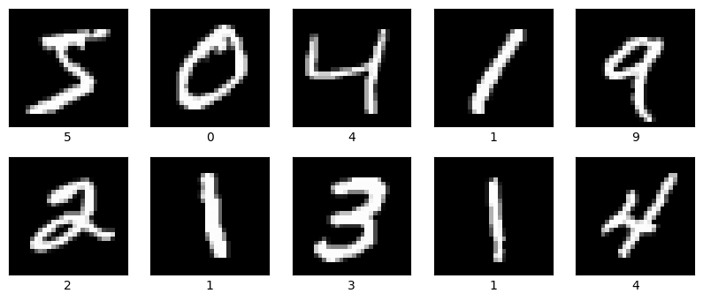
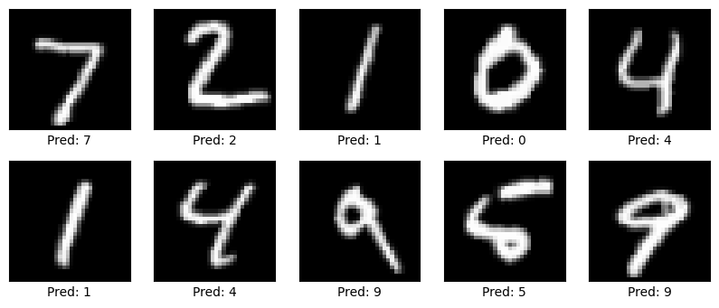
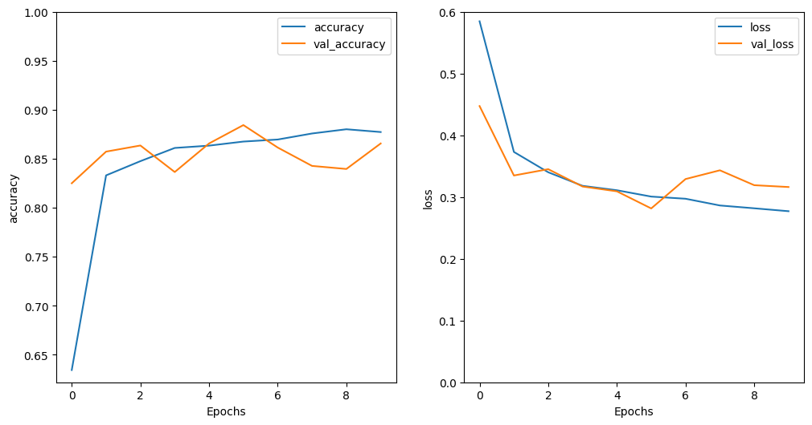

#@title Importar librerías
# Importamos las librerias a utilizar
import tensorflow as tf
import tensorflow_datasets as tfds
from tensorflow.keras import layers, models, optimizers, callbacks
from tensorflow.keras.applications import VGG16
from tensorflow.keras.datasets import mnist
from tensorflow.keras.utils import to_categorical
import numpy as np
import matplotlib.pyplot as plt
from tensorflow.keras import backend as K
from gensim.models import KeyedVectors
%matplotlib inlineIntroducción a pre-trained models, transfer learning and fine tuning

En este notebook encontrarás material introductorio para entender los conceptos de modelos preentrenados, transferencia de aprendizaje y ajuste fino. Y cómo estos, empleados de forman correcta, pueden aumentar el rendimiento de tus modelos.
Transfer Learning y fine tuning en tareas de Visión por Computadora
Modelos preentrenados
En esta sección, utilizaremos el modelo pre-entrenado VGG16, el cual es una red convolucional que es usada para reconocimiento de imágenes. Este modelo fue entrenado con ImageNet, por lo cual es un modelo bastante robusto.
Objetivo:
- El objetivo será cargar dicho modelo pre-entrenado y utilizarlo sobre el dataset MNIST, el cual contiene 70.000 imagenes de digitos escritos a mano. Así, poder clasificar dichos números con nuestro modelo entrenado previamente.
#@title Definir funciones complementarias
def plot_graphs(history, metric):
plt.plot(history.history[metric])
plt.plot(history.history['val_'+metric], '')
plt.xlabel("Epochs")
plt.ylabel(metric)
plt.legend([metric, 'val_'+metric])
def cosine_similarity(vec_a, vec_b):
"""Compute cosine similarity between vec_a and vec_b"""
return np.dot(vec_a, vec_b) / (np.linalg.norm(vec_a) * np.linalg.norm(vec_b))# Cargamos el dataset MNIST
(train_images, train_labels), (test_images, test_labels) = mnist.load_data()
print("Train shape: ", train_images.shape)
print("Test shape: ", test_images.shape)Train shape: (60000, 28, 28)
Test shape: (10000, 28, 28)# dibujamos ciertos ejemplos de entrenamiento
plt.figure(figsize=(10, 4))
for i in range(10):
plt.subplot(2, 5, i + 1)
plt.grid(False)
plt.xticks([])
plt.yticks([])
plt.imshow(train_images[i], cmap=plt.cm.gray)
plt.xlabel(train_labels[i])
plt.show()
# Redimensionamos las imagenes a 32x32 (el minimo tamaño que soporta vgg16)
train_images = tf.image.grayscale_to_rgb(tf.expand_dims(train_images, axis=-1))
test_images = tf.image.grayscale_to_rgb(tf.expand_dims(test_images, axis=-1))
# Agregamos 3 canales de color (RGB) debido a que la red tambien lo necesita
train_images = tf.image.resize(train_images, [32, 32])
test_images = tf.image.resize(test_images, [32, 32])
# Normalizamos las imagenes entre [0, 1] para que el aprendizaje sea mas suave
train_images = train_images / 255.0
test_images = test_images / 255.0
print("Train shape: ", train_images.shape)
print("Test shape: ", test_images.shape)Train shape: (60000, 32, 32, 3)
Test shape: (10000, 32, 32, 3)# Convertimos las etiquetas a formato one-hot encoding
train_labels_ohc = to_categorical(train_labels, 10)
test_labels_ohc = to_categorical(test_labels, 10)
print(train_labels_ohc[:,1])[0. 0. 0. ... 0. 0. 0.]# Cargamos el modelo VGG16 preentrenado, excluyendo las capas superiores (top=False)
# Recuerde que las capas superiores son las que definen el tipo de problema a solucionar
# Como nuestro problema es de 10 categorias (10 digitos), agregaremos nuestras propias capas superiores
vgg16_base = VGG16(weights='imagenet', include_top=False, input_shape=(32, 32, 3))
vgg16_base.summary()Model: "vgg16"
┏━━━━━━━━━━━━━━━━━━━━━━━━━━━━━━━━━━━━━━┳━━━━━━━━━━━━━━━━━━━━━━━━━━━━━┳━━━━━━━━━━━━━━━━━┓ ┃ Layer (type) ┃ Output Shape ┃ Param # ┃ ┡━━━━━━━━━━━━━━━━━━━━━━━━━━━━━━━━━━━━━━╇━━━━━━━━━━━━━━━━━━━━━━━━━━━━━╇━━━━━━━━━━━━━━━━━┩ │ input_layer (InputLayer) │ (None, 32, 32, 3) │ 0 │ ├──────────────────────────────────────┼─────────────────────────────┼─────────────────┤ │ block1_conv1 (Conv2D) │ (None, 32, 32, 64) │ 1,792 │ ├──────────────────────────────────────┼─────────────────────────────┼─────────────────┤ │ block1_conv2 (Conv2D) │ (None, 32, 32, 64) │ 36,928 │ ├──────────────────────────────────────┼─────────────────────────────┼─────────────────┤ │ block1_pool (MaxPooling2D) │ (None, 16, 16, 64) │ 0 │ ├──────────────────────────────────────┼─────────────────────────────┼─────────────────┤ │ block2_conv1 (Conv2D) │ (None, 16, 16, 128) │ 73,856 │ ├──────────────────────────────────────┼─────────────────────────────┼─────────────────┤ │ block2_conv2 (Conv2D) │ (None, 16, 16, 128) │ 147,584 │ ├──────────────────────────────────────┼─────────────────────────────┼─────────────────┤ │ block2_pool (MaxPooling2D) │ (None, 8, 8, 128) │ 0 │ ├──────────────────────────────────────┼─────────────────────────────┼─────────────────┤ │ block3_conv1 (Conv2D) │ (None, 8, 8, 256) │ 295,168 │ ├──────────────────────────────────────┼─────────────────────────────┼─────────────────┤ │ block3_conv2 (Conv2D) │ (None, 8, 8, 256) │ 590,080 │ ├──────────────────────────────────────┼─────────────────────────────┼─────────────────┤ │ block3_conv3 (Conv2D) │ (None, 8, 8, 256) │ 590,080 │ ├──────────────────────────────────────┼─────────────────────────────┼─────────────────┤ │ block3_pool (MaxPooling2D) │ (None, 4, 4, 256) │ 0 │ ├──────────────────────────────────────┼─────────────────────────────┼─────────────────┤ │ block4_conv1 (Conv2D) │ (None, 4, 4, 512) │ 1,180,160 │ ├──────────────────────────────────────┼─────────────────────────────┼─────────────────┤ │ block4_conv2 (Conv2D) │ (None, 4, 4, 512) │ 2,359,808 │ ├──────────────────────────────────────┼─────────────────────────────┼─────────────────┤ │ block4_conv3 (Conv2D) │ (None, 4, 4, 512) │ 2,359,808 │ ├──────────────────────────────────────┼─────────────────────────────┼─────────────────┤ │ block4_pool (MaxPooling2D) │ (None, 2, 2, 512) │ 0 │ ├──────────────────────────────────────┼─────────────────────────────┼─────────────────┤ │ block5_conv1 (Conv2D) │ (None, 2, 2, 512) │ 2,359,808 │ ├──────────────────────────────────────┼─────────────────────────────┼─────────────────┤ │ block5_conv2 (Conv2D) │ (None, 2, 2, 512) │ 2,359,808 │ ├──────────────────────────────────────┼─────────────────────────────┼─────────────────┤ │ block5_conv3 (Conv2D) │ (None, 2, 2, 512) │ 2,359,808 │ ├──────────────────────────────────────┼─────────────────────────────┼─────────────────┤ │ block5_pool (MaxPooling2D) │ (None, 1, 1, 512) │ 0 │ └──────────────────────────────────────┴─────────────────────────────┴─────────────────┘
Total params: 14,714,688 (56.13 MB)
Trainable params: 14,714,688 (56.13 MB)
Non-trainable params: 0 (0.00 B)
# Ahora congelamos los pesos del modelo, pues solo queremos agrega una nueva capa
# con 10 neuronas, donde cada una representará el digito que queremos predecir
vgg16_base.trainable = False
model = models.Sequential([
vgg16_base,
layers.Flatten(),
layers.Dropout(0.5),
layers.Dense(10, activation='softmax') # 10 clases de salida
])# Compilamos y entrenamos los pesos de nuestra última capa
model.compile(optimizer='adam', loss='categorical_crossentropy', metrics=['accuracy'])
history = model.fit(train_images, train_labels_ohc, epochs=5,
batch_size=64, validation_data=(test_images, test_labels_ohc))Epoch 1/5 938/938 ━━━━━━━━━━━━━━━━━━━━ 23s 16ms/step - accuracy: 0.5699 - loss: 1.3459 - val_accuracy: 0.8679 - val_loss: 0.5477 Epoch 2/5 938/938 ━━━━━━━━━━━━━━━━━━━━ 30s 10ms/step - accuracy: 0.8064 - loss: 0.6443 - val_accuracy: 0.8992 - val_loss: 0.4113 Epoch 3/5 938/938 ━━━━━━━━━━━━━━━━━━━━ 10s 10ms/step - accuracy: 0.8276 - loss: 0.5497 - val_accuracy: 0.9120 - val_loss: 0.3532 Epoch 4/5 938/938 ━━━━━━━━━━━━━━━━━━━━ 10s 11ms/step - accuracy: 0.8366 - loss: 0.5071 - val_accuracy: 0.9121 - val_loss: 0.3253 Epoch 5/5 938/938 ━━━━━━━━━━━━━━━━━━━━ 12s 13ms/step - accuracy: 0.8482 - loss: 0.4773 - val_accuracy: 0.9237 - val_loss: 0.3011
# Medimos la precisión del modelo en el conjunto de prueba
test_loss, test_acc = model.evaluate(test_images, test_labels_ohc)
print(f"Precisión en el conjunto de prueba: {test_acc}")313/313 ━━━━━━━━━━━━━━━━━━━━ 3s 7ms/step - accuracy: 0.9149 - loss: 0.3224 Precisión en el conjunto de prueba: 0.9236999750137329
# Mostramos el modelo
model.summary()Model: "sequential"
┏━━━━━━━━━━━━━━━━━━━━━━━━━━━━━━━━━━━━━━┳━━━━━━━━━━━━━━━━━━━━━━━━━━━━━┳━━━━━━━━━━━━━━━━━┓ ┃ Layer (type) ┃ Output Shape ┃ Param # ┃ ┡━━━━━━━━━━━━━━━━━━━━━━━━━━━━━━━━━━━━━━╇━━━━━━━━━━━━━━━━━━━━━━━━━━━━━╇━━━━━━━━━━━━━━━━━┩ │ vgg16 (Functional) │ (None, 1, 1, 512) │ 14,714,688 │ ├──────────────────────────────────────┼─────────────────────────────┼─────────────────┤ │ flatten (Flatten) │ (None, 512) │ 0 │ ├──────────────────────────────────────┼─────────────────────────────┼─────────────────┤ │ dropout (Dropout) │ (None, 512) │ 0 │ ├──────────────────────────────────────┼─────────────────────────────┼─────────────────┤ │ dense (Dense) │ (None, 10) │ 5,130 │ └──────────────────────────────────────┴─────────────────────────────┴─────────────────┘
Total params: 14,730,080 (56.19 MB)
Trainable params: 5,130 (20.04 KB)
Non-trainable params: 14,714,688 (56.13 MB)
Optimizer params: 10,262 (40.09 KB)
# Dibujamos ciertas imágenes con sus predicciones
plt.figure(figsize=(10, 4))
for i in range(10):
plt.subplot(2, 5, i + 1)
plt.grid(False)
plt.xticks([])
plt.yticks([])
plt.imshow(test_images[i], cmap=plt.cm.gray)
pred = np.argmax(model.predict(np.expand_dims(test_images[i], axis=0), verbose=False))
plt.xlabel(f"Pred: {pred}")
plt.show()
Observaciones:
- Note que al cargar un modelo pre-entrenado, logramos tener unos pesos que ya saben encontrar ciertos tipos de características dentro de las imágenes. Es por ello que cuando entrenamos nuestra capa superior (10 neuronas), solo hacen falta 5 épocas para alcanzar un accuracy del 92.14% en el conjunto de prueba.
- Cabe resaltar que utilizamos un modelo pre-entrenado y agregamos una capa superior para adaptarlo a nuestro problema. Esto se podría considerar transfer learning tambien.
Modelos preentrenados
Para dejar mas claro el concepto de transfer learning lo que haremos es coger el mismo modelo definido anteriormente, solo que esta vez si entrenaremos los pesos del modelo pre-entrenado, para así alcanzar un mejor rendimiento.
# Reiniciar el backend para que las ejecuciones anteriores no interfieran
K.clear_session()# Definimos el modelo, especificando que queremos entrenar el modelo VGG16
vgg16_base.trainable = True
model_2 = models.Sequential([
vgg16_base,
layers.Flatten(),
layers.Dropout(0.5),
layers.Dense(10, activation='softmax') # 10 clases de salida
])# Compilamos y entrenamos los pesos de nuestra última capa
model_2.compile(optimizer='adam', loss='categorical_crossentropy', metrics=['accuracy'])
history = model_2.fit(train_images, train_labels_ohc, epochs=5,
batch_size=64, validation_data=(test_images, test_labels_ohc))Epoch 1/5 938/938 ━━━━━━━━━━━━━━━━━━━━ 62s 53ms/step - accuracy: 0.1045 - loss: 2.3221 - val_accuracy: 0.1135 - val_loss: 2.3011 Epoch 2/5 938/938 ━━━━━━━━━━━━━━━━━━━━ 63s 42ms/step - accuracy: 0.1117 - loss: 2.3013 - val_accuracy: 0.1135 - val_loss: 2.3011 Epoch 3/5 938/938 ━━━━━━━━━━━━━━━━━━━━ 41s 42ms/step - accuracy: 0.1110 - loss: 2.3015 - val_accuracy: 0.1135 - val_loss: 2.3011 Epoch 4/5 938/938 ━━━━━━━━━━━━━━━━━━━━ 41s 43ms/step - accuracy: 0.1111 - loss: 2.3017 - val_accuracy: 0.1135 - val_loss: 2.3010 Epoch 5/5 938/938 ━━━━━━━━━━━━━━━━━━━━ 42s 45ms/step - accuracy: 0.1114 - loss: 2.3014 - val_accuracy: 0.1135 - val_loss: 2.3010
# Medimos la precisión del modelo 2 en el conjunto de prueba
test_loss, test_acc = model_2.evaluate(test_images, test_labels_ohc)
print(f"Precisión en el conjunto de prueba: {test_acc}")313/313 ━━━━━━━━━━━━━━━━━━━━ 3s 6ms/step - accuracy: 0.1160 - loss: 2.3009 Precisión en el conjunto de prueba: 0.11349999904632568
# Imprimamos la estructura del modelo 2
model_2.summary()Model: "sequential"
┏━━━━━━━━━━━━━━━━━━━━━━━━━━━━━━━━━━━━━━┳━━━━━━━━━━━━━━━━━━━━━━━━━━━━━┳━━━━━━━━━━━━━━━━━┓ ┃ Layer (type) ┃ Output Shape ┃ Param # ┃ ┡━━━━━━━━━━━━━━━━━━━━━━━━━━━━━━━━━━━━━━╇━━━━━━━━━━━━━━━━━━━━━━━━━━━━━╇━━━━━━━━━━━━━━━━━┩ │ vgg16 (Functional) │ (None, 1, 1, 512) │ 14,714,688 │ ├──────────────────────────────────────┼─────────────────────────────┼─────────────────┤ │ flatten (Flatten) │ (None, 512) │ 0 │ ├──────────────────────────────────────┼─────────────────────────────┼─────────────────┤ │ dropout (Dropout) │ (None, 512) │ 0 │ ├──────────────────────────────────────┼─────────────────────────────┼─────────────────┤ │ dense (Dense) │ (None, 10) │ 5,130 │ └──────────────────────────────────────┴─────────────────────────────┴─────────────────┘
Total params: 44,159,456 (168.45 MB)
Trainable params: 14,719,818 (56.15 MB)
Non-trainable params: 0 (0.00 B)
Optimizer params: 29,439,638 (112.30 MB)
Observaciones:
Antes de hablar del mal rendimiento del modelo (un 9.7% de accuracy en el conjunto de prueba). Hay que hablar de que ahora demoró mas entrenandose. Esto se debe a que ahora, se ajustaron todos los parámeros posibles, no como en el modelo anterior que solo ajustamos los parámetros de la capa superior.
Una de las razones por las cuales se obtuvo un accuracy muy bajo, es debido a que empezamos a ajustar el modelo pre-entrenado, pero pasamos de tener 512 neuronas como salida del modelo pre-entrenado, a solo tener 10. Entonces ese error se propagó y ajsuto erróneamente los pesos ya entrenados. Lo cual llevó a que el modelo no mejorara.
Para mitigar este error, utilizaremos fine tunning ajustando mas la capa superior. Así podremos tener un mejor rendimiento de nuestro modelo de transfer learning
Fine tunning
- Para el ajuste fino, lo que haremos es lo siguiente:
- Congelaremos las primeras capas del modelo pre-entrenado
- Agregaremos unas capas superiores al modelo.
- Entrenaremos el modelo así.
- Después, descongelaremos capas superiores del modelo pre-entrenado y hacemos ese ajuste fino (entrenamos) para aumentar el acierto del modelo.
# Reiniciar el backend para que las ejecuciones anteriores no interfieran
K.clear_session()vgg16_base = VGG16(weights='imagenet', include_top=False, input_shape=(32, 32, 3))
for layer in vgg16_base.layers[:15]: # Congelar las primeras 15 capas
layer.trainable = False
# Agregamos mas neuronas después de nuestro modelo pre-entrenado, para hacer un ajuste mas fino
model_3 = models.Sequential([
vgg16_base,
layers.Flatten(),
layers.Dense(512, activation='relu'), # Incrementamos el número de unidades para mayor capacidad de representación
layers.Dropout(0.5), # Aumentamos el Dropout para evitar el sobreajuste
layers.Dense(10, activation='softmax') # Capa final con 10 clases
])# compilamos el modelo y definimos una parada temprana para mitigar el sobreajuste
model_3.compile(optimizer=optimizers.Adam(learning_rate=1e-4), loss='categorical_crossentropy', metrics=['accuracy'])
early_stopping = callbacks.EarlyStopping(monitor='val_loss', patience=5, restore_best_weights=True)# Entrenamos nuestro modelo
history = model_3.fit(train_images, train_labels_ohc, batch_size=64,
epochs=20,
validation_data=(test_images, test_labels_ohc),
callbacks=[early_stopping])Epoch 1/20 938/938 ━━━━━━━━━━━━━━━━━━━━ 22s 20ms/step - accuracy: 0.9012 - loss: 0.3114 - val_accuracy: 0.9808 - val_loss: 0.0569 Epoch 2/20 938/938 ━━━━━━━━━━━━━━━━━━━━ 17s 18ms/step - accuracy: 0.9852 - loss: 0.0505 - val_accuracy: 0.9728 - val_loss: 0.0906 Epoch 3/20 938/938 ━━━━━━━━━━━━━━━━━━━━ 20s 18ms/step - accuracy: 0.9894 - loss: 0.0353 - val_accuracy: 0.9902 - val_loss: 0.0321 Epoch 4/20 938/938 ━━━━━━━━━━━━━━━━━━━━ 19s 17ms/step - accuracy: 0.9910 - loss: 0.0302 - val_accuracy: 0.9902 - val_loss: 0.0332 Epoch 5/20 938/938 ━━━━━━━━━━━━━━━━━━━━ 21s 17ms/step - accuracy: 0.9925 - loss: 0.0255 - val_accuracy: 0.9874 - val_loss: 0.0449 Epoch 6/20 938/938 ━━━━━━━━━━━━━━━━━━━━ 15s 16ms/step - accuracy: 0.9936 - loss: 0.0217 - val_accuracy: 0.9911 - val_loss: 0.0281 Epoch 7/20 938/938 ━━━━━━━━━━━━━━━━━━━━ 20s 16ms/step - accuracy: 0.9946 - loss: 0.0190 - val_accuracy: 0.9896 - val_loss: 0.0363 Epoch 8/20 938/938 ━━━━━━━━━━━━━━━━━━━━ 15s 16ms/step - accuracy: 0.9940 - loss: 0.0200 - val_accuracy: 0.9902 - val_loss: 0.0370 Epoch 9/20 938/938 ━━━━━━━━━━━━━━━━━━━━ 21s 17ms/step - accuracy: 0.9944 - loss: 0.0195 - val_accuracy: 0.9921 - val_loss: 0.0256 Epoch 10/20 938/938 ━━━━━━━━━━━━━━━━━━━━ 17s 18ms/step - accuracy: 0.9956 - loss: 0.0147 - val_accuracy: 0.9905 - val_loss: 0.0364 Epoch 11/20 938/938 ━━━━━━━━━━━━━━━━━━━━ 19s 16ms/step - accuracy: 0.9955 - loss: 0.0141 - val_accuracy: 0.9912 - val_loss: 0.0325 Epoch 12/20 938/938 ━━━━━━━━━━━━━━━━━━━━ 21s 16ms/step - accuracy: 0.9961 - loss: 0.0131 - val_accuracy: 0.9900 - val_loss: 0.0378 Epoch 13/20 938/938 ━━━━━━━━━━━━━━━━━━━━ 17s 18ms/step - accuracy: 0.9959 - loss: 0.0134 - val_accuracy: 0.9917 - val_loss: 0.0350 Epoch 14/20 938/938 ━━━━━━━━━━━━━━━━━━━━ 20s 18ms/step - accuracy: 0.9969 - loss: 0.0110 - val_accuracy: 0.9920 - val_loss: 0.0294
# Evaluamos el accuracy del modelo en los datos de prueba
test_loss, test_acc = model_3.evaluate(test_images, test_labels_ohc)
print(f"Precisión después del fine-tuning avanzado: {test_acc}")313/313 ━━━━━━━━━━━━━━━━━━━━ 3s 7ms/step - accuracy: 0.9882 - loss: 0.0374 Precisión después del fine-tuning avanzado: 0.9921000003814697
Transfer learning y fine tuning en tareas de NLP
#@title Descargar vectores embebidos en inglés y español
# Descargar los vectores FastText de inglés y español
!wget https://dl.fbaipublicfiles.com/fasttext/vectors-crawl/cc.en.300.vec.gz
!wget https://dl.fbaipublicfiles.com/fasttext/vectors-crawl/cc.es.300.vec.gz
# Descomprimir los archivos
!gunzip cc.en.300.vec.gz
!gunzip cc.es.300.vec.gz--2024-10-18 13:11:42-- https://dl.fbaipublicfiles.com/fasttext/vectors-crawl/cc.en.300.vec.gz
Resolving dl.fbaipublicfiles.com (dl.fbaipublicfiles.com)... 3.163.189.96, 3.163.189.108, 3.163.189.51, ...
Connecting to dl.fbaipublicfiles.com (dl.fbaipublicfiles.com)|3.163.189.96|:443... connected.
HTTP request sent, awaiting response... 200 OK
Length: 1325960915 (1.2G) [binary/octet-stream]
Saving to: ‘cc.en.300.vec.gz’
cc.en.300.vec.gz 100%[===================>] 1.23G 85.8MB/s in 8.9s
2024-10-18 13:11:51 (142 MB/s) - ‘cc.en.300.vec.gz’ saved [1325960915/1325960915]
--2024-10-18 13:11:51-- https://dl.fbaipublicfiles.com/fasttext/vectors-crawl/cc.es.300.vec.gz
Resolving dl.fbaipublicfiles.com (dl.fbaipublicfiles.com)... 3.163.189.96, 3.163.189.108, 3.163.189.51, ...
Connecting to dl.fbaipublicfiles.com (dl.fbaipublicfiles.com)|3.163.189.96|:443... connected.
HTTP request sent, awaiting response... 200 OK
Length: 1285580896 (1.2G) [binary/octet-stream]
Saving to: ‘cc.es.300.vec.gz’
cc.es.300.vec.gz 100%[===================>] 1.20G 28.5MB/s in 45s
2024-10-18 13:12:36 (27.3 MB/s) - ‘cc.es.300.vec.gz’ saved [1285580896/1285580896]
# Cargar los embeddings preentrenados de FastText (esto puede tardar un poco)
embedding_en = KeyedVectors.load_word2vec_format('cc.en.300.vec', binary=False)
# Probar cargando una palabra
print(embedding_en['hello'])[ 1.576e-01 4.380e-02 -4.500e-03 6.660e-02 7.700e-02 4.900e-03
8.200e-03 6.500e-03 9.300e-03 3.540e-02 -2.310e-02 -4.920e-02
-8.330e-02 1.560e-02 2.549e-01 3.450e-02 -1.070e-02 -7.800e-02
-7.080e-02 7.620e-02 -6.100e-02 4.490e-02 -7.300e-02 1.310e-02
3.150e-02 -3.100e-02 1.660e-02 1.740e-02 -7.360e-02 1.182e-01
-1.213e-01 -4.090e-02 2.940e-02 4.840e-02 -1.340e-02 -1.750e-02
7.510e-02 9.970e-02 -4.000e-02 4.100e-03 -7.220e-02 -4.430e-02
-1.200e-03 7.570e-02 3.980e-02 3.230e-02 1.960e-02 4.680e-02
-1.460e-02 1.130e-01 3.150e-02 -1.023e-01 1.581e-01 -2.760e-02
-3.400e-02 -1.770e-02 -6.000e-04 1.108e-01 -1.650e-02 -3.100e-03
-4.230e-02 1.114e-01 -5.310e-02 4.910e-02 9.100e-02 6.570e-02
-3.710e-02 3.820e-02 7.250e-02 -5.320e-02 3.060e-02 -5.770e-02
-8.070e-02 -9.060e-02 -8.050e-02 -6.030e-02 -9.730e-02 4.830e-02
6.800e-02 -2.600e-03 -8.600e-03 -5.100e-03 3.160e-02 6.670e-02
3.000e-04 -8.350e-02 4.450e-02 3.600e-02 -2.070e-02 -6.210e-02
-9.080e-02 -4.880e-02 1.328e-01 1.260e-02 4.610e-02 -5.540e-02
2.300e-03 4.920e-02 3.360e-02 6.640e-02 -8.930e-02 -5.370e-02
1.322e-01 -9.100e-03 3.300e-03 -4.370e-02 7.520e-02 -4.370e-02
-3.930e-02 4.900e-02 8.060e-02 -3.940e-02 -7.600e-02 7.170e-02
-1.890e-02 -4.210e-02 3.300e-03 -2.140e-02 -1.301e-01 1.370e-02
-5.150e-02 3.870e-02 4.930e-02 -6.180e-02 -3.400e-02 3.520e-02
2.590e-02 -1.028e-01 6.010e-02 -7.140e-02 -2.240e-02 -1.034e-01
-6.350e-02 1.200e-03 -8.400e-03 -7.100e-02 -1.390e-02 9.300e-02
-7.620e-02 -1.800e-01 4.980e-02 5.600e-02 4.370e-02 1.690e-02
-3.520e-02 5.500e-03 -1.517e-01 8.300e-03 1.339e-01 1.184e-01
-2.550e-02 -5.900e-02 -1.155e-01 -9.120e-02 -3.260e-02 9.600e-03
7.080e-02 -1.196e-01 -2.450e-02 4.670e-02 -1.058e-01 8.400e-03
-3.590e-02 -7.120e-02 1.491e-01 -9.410e-02 3.880e-02 4.800e-02
2.000e-02 5.700e-02 -5.090e-02 -1.550e-02 -3.210e-02 6.400e-02
4.460e-02 -5.420e-02 2.390e-02 3.990e-02 4.950e-02 -8.130e-02
8.680e-02 2.790e-02 2.230e-02 6.880e-02 5.800e-02 1.240e-02
9.180e-02 1.700e-02 -2.210e-02 -5.550e-02 3.200e-03 -8.950e-02
-6.000e-04 -4.810e-02 -4.110e-02 -3.470e-02 -4.230e-02 1.011e-01
4.350e-02 6.750e-02 -7.330e-02 2.330e-02 3.770e-02 9.000e-03
-8.250e-02 -9.680e-02 5.900e-03 2.620e-02 -2.230e-02 7.390e-02
-1.900e-03 -9.780e-02 -5.380e-02 -4.770e-02 -1.300e-02 8.000e-04
2.900e-02 -3.100e-03 -9.290e-02 6.740e-02 -1.855e-01 4.010e-02
-5.630e-02 6.190e-02 8.940e-02 -6.910e-02 -3.220e-02 -1.354e-01
-7.460e-02 1.015e-01 -2.700e-03 6.070e-02 2.430e-02 -1.519e-01
-2.940e-02 -4.200e-03 5.160e-02 1.860e-01 -2.560e-02 8.120e-02
3.200e-03 -3.360e-02 3.900e-02 -7.380e-02 1.146e-01 -1.000e-04
-3.690e-02 9.310e-02 -2.930e-02 5.210e-02 8.000e-03 -2.930e-02
1.312e-01 -8.320e-02 -3.400e-02 1.213e-01 3.510e-02 4.200e-03
5.030e-02 2.060e-02 7.900e-02 -4.950e-02 2.540e-02 -2.960e-02
-2.650e-02 5.430e-02 -5.530e-02 1.070e-02 -3.000e-02 -6.050e-02
8.540e-02 -6.660e-02 -6.780e-02 3.520e-02 6.200e-02 4.810e-02
-3.450e-02 -2.870e-02 -5.910e-02 -5.100e-03 -9.740e-02 1.900e-03
-9.060e-02 1.480e-02 -9.780e-02 3.960e-02 2.830e-02 -9.280e-02
-8.200e-03 -4.570e-02 1.123e-01 8.600e-02 -1.475e-01 8.330e-02
9.950e-02 -3.670e-02 6.850e-02 8.070e-02 -4.500e-02 -3.110e-02]Mismo ejercicio Clasificación de texto usando RNN
dataset, info = tfds.load('imdb_reviews', with_info=True,
as_supervised=True)
train_dataset, test_dataset = dataset['train'], dataset['test']Downloading and preparing dataset 80.23 MiB (download: 80.23 MiB, generated: Unknown size, total: 80.23 MiB) to /root/tensorflow_datasets/imdb_reviews/plain_text/1.0.0...Dataset imdb_reviews downloaded and prepared to /root/tensorflow_datasets/imdb_reviews/plain_text/1.0.0. Subsequent calls will reuse this data.BUFFER_SIZE = 10000
BATCH_SIZE = 32
# optimización para train
train_dataset = train_dataset.shuffle(BUFFER_SIZE).batch(BATCH_SIZE).prefetch(tf.data.AUTOTUNE)
# optimización para test
test_dataset = test_dataset.batch(BATCH_SIZE).prefetch(tf.data.AUTOTUNE)VOCAB_SIZE = 1000
encoder = tf.keras.layers.TextVectorization(
max_tokens=VOCAB_SIZE)
# Crea la capa y pasa el texto del conjunto de datos al método .adapt de la capa
encoder.adapt(train_dataset.map(lambda text, label: text))# Obtener el vocabulario del encoder
vocab = encoder.get_vocabulary()
print(vocab[:10])
# Dimensiones de los embeddings preentrenados
embedding_dim = 300 # Dimensión de los embeddings de FastText
# Crear una matriz de embeddings aleatoria (en caso de que alguna palabra no esté en FastText)
embedding_matrix = np.random.uniform(-0.25, 0.25, (len(vocab), embedding_dim))
# Llenar la matriz con los vectores de FastText para las palabras del vocabulario
for i, word in enumerate(vocab):
if word in embedding_en:
embedding_matrix[i] = embedding_en[word]
else:
# Dejar la fila con los valores aleatorios (o también puedes poner ceros)
embedding_matrix[i] = np.random.uniform(-0.25, 0.25, embedding_dim)['', '[UNK]', 'the', 'and', 'a', 'of', 'to', 'is', 'in', 'it']embedding_matrix.shape(1000, 300)def rnn(pretrained_vector_matrix):
# Ahora utilizamos la API funcional de Keras
inputs = tf.keras.layers.Input(shape=(1,), dtype=tf.string) # El input será una cadena de texto
x = encoder(inputs) # Aplicamos el encoder
x = tf.keras.layers.Embedding(
input_dim=len(encoder.get_vocabulary()), # Tamaño del vocabulario
output_dim=pretrained_vector_matrix.shape[1], # Dimensión de los embeddings (300)
embeddings_initializer=tf.keras.initializers.Constant(pretrained_vector_matrix),
trainable=True, # Congelar los embeddings
mask_zero=True)(x) # Capa de Embedding
x = tf.keras.layers.Bidirectional(tf.keras.layers.LSTM(64, return_sequences=False), merge_mode='concat')(x) # Capa LSTM Bidireccional
x = tf.keras.layers.Dense(64, activation='relu')(x) # Capa densa
outputs = tf.keras.layers.Dense(1)(x) # Capa de salida
# Definimos el modelo
model = tf.keras.Model(inputs, outputs)
return model
# crear la red RNN
model = rnn(embedding_matrix)
# Compilamos el modelo
model.compile(loss=tf.keras.losses.BinaryCrossentropy(from_logits=True),
optimizer=tf.keras.optimizers.Adam(1e-4),
metrics=['accuracy'])
# Verificamos la estructura del modelo
model.summary()Model: "functional_1"
┏━━━━━━━━━━━━━━━━━━━━━━━━━━━┳━━━━━━━━━━━━━━━━━━━━━━━━┳━━━━━━━━━━━━━━━━┳━━━━━━━━━━━━━━━━━━━━━━━━┓ ┃ Layer (type) ┃ Output Shape ┃ Param # ┃ Connected to ┃ ┡━━━━━━━━━━━━━━━━━━━━━━━━━━━╇━━━━━━━━━━━━━━━━━━━━━━━━╇━━━━━━━━━━━━━━━━╇━━━━━━━━━━━━━━━━━━━━━━━━┩ │ input_layer_1 │ (None, 1) │ 0 │ - │ │ (InputLayer) │ │ │ │ ├───────────────────────────┼────────────────────────┼────────────────┼────────────────────────┤ │ text_vectorization │ (None, None) │ 0 │ input_layer_1[0][0] │ │ (TextVectorization) │ │ │ │ ├───────────────────────────┼────────────────────────┼────────────────┼────────────────────────┤ │ embedding_1 (Embedding) │ (None, None, 300) │ 300,000 │ text_vectorization[1]… │ ├───────────────────────────┼────────────────────────┼────────────────┼────────────────────────┤ │ not_equal_1 (NotEqual) │ (None, None) │ 0 │ text_vectorization[1]… │ ├───────────────────────────┼────────────────────────┼────────────────┼────────────────────────┤ │ bidirectional_1 │ (None, 128) │ 186,880 │ embedding_1[0][0], │ │ (Bidirectional) │ │ │ not_equal_1[0][0] │ ├───────────────────────────┼────────────────────────┼────────────────┼────────────────────────┤ │ dense_2 (Dense) │ (None, 64) │ 8,256 │ bidirectional_1[0][0] │ ├───────────────────────────┼────────────────────────┼────────────────┼────────────────────────┤ │ dense_3 (Dense) │ (None, 1) │ 65 │ dense_2[0][0] │ └───────────────────────────┴────────────────────────┴────────────────┴────────────────────────┘
Total params: 495,201 (1.89 MB)
Trainable params: 495,201 (1.89 MB)
Non-trainable params: 0 (0.00 B)
# hacer una prueba sin usar padding
# El texto crudo que quieres predecir
sample_text = ('The movie was cool. The animation and the graphics were out of this world.')
# No es necesario hacer la vectorización manual aquí, simplemente pasa el texto crudo al modelo
predictions = model.predict(tf.constant([sample_text]))
# Imprime la predicción
print(predictions[0])1/1 ━━━━━━━━━━━━━━━━━━━━ 0s 379ms/step [-0.06903996]
history = model.fit(train_dataset, epochs=10,
validation_data=test_dataset,
validation_steps=30)Epoch 1/10 782/782 ━━━━━━━━━━━━━━━━━━━━ 43s 52ms/step - accuracy: 0.5433 - loss: 0.6593 - val_accuracy: 0.8250 - val_loss: 0.4475 Epoch 2/10 782/782 ━━━━━━━━━━━━━━━━━━━━ 42s 54ms/step - accuracy: 0.8240 - loss: 0.3888 - val_accuracy: 0.8573 - val_loss: 0.3350 Epoch 3/10 782/782 ━━━━━━━━━━━━━━━━━━━━ 80s 52ms/step - accuracy: 0.8420 - loss: 0.3497 - val_accuracy: 0.8635 - val_loss: 0.3453 Epoch 4/10 782/782 ━━━━━━━━━━━━━━━━━━━━ 40s 50ms/step - accuracy: 0.8608 - loss: 0.3217 - val_accuracy: 0.8365 - val_loss: 0.3172 Epoch 5/10 782/782 ━━━━━━━━━━━━━━━━━━━━ 39s 50ms/step - accuracy: 0.8639 - loss: 0.3106 - val_accuracy: 0.8656 - val_loss: 0.3094 Epoch 6/10 782/782 ━━━━━━━━━━━━━━━━━━━━ 40s 50ms/step - accuracy: 0.8689 - loss: 0.2969 - val_accuracy: 0.8844 - val_loss: 0.2817 Epoch 7/10 782/782 ━━━━━━━━━━━━━━━━━━━━ 39s 50ms/step - accuracy: 0.8743 - loss: 0.2935 - val_accuracy: 0.8615 - val_loss: 0.3293 Epoch 8/10 782/782 ━━━━━━━━━━━━━━━━━━━━ 41s 50ms/step - accuracy: 0.8788 - loss: 0.2812 - val_accuracy: 0.8427 - val_loss: 0.3435 Epoch 9/10 782/782 ━━━━━━━━━━━━━━━━━━━━ 39s 50ms/step - accuracy: 0.8821 - loss: 0.2770 - val_accuracy: 0.8396 - val_loss: 0.3193 Epoch 10/10 782/782 ━━━━━━━━━━━━━━━━━━━━ 42s 51ms/step - accuracy: 0.8780 - loss: 0.2756 - val_accuracy: 0.8656 - val_loss: 0.3164
test_loss, test_acc = model.evaluate(test_dataset)
print('Test Loss:', test_loss)
print('Test Accuracy:', test_acc)782/782 ━━━━━━━━━━━━━━━━━━━━ 19s 24ms/step - accuracy: 0.8578 - loss: 0.3114 Test Loss: 0.311646044254303 Test Accuracy: 0.8579199910163879
plt.figure(figsize=(12, 6))
plt.subplot(1, 2, 1)
plot_graphs(history, 'accuracy')
plt.ylim(None, 1)
plt.subplot(1, 2, 2)
plot_graphs(history, 'loss')
plt.ylim(0, None)
Conclusiones
- Note que al agregarle al modelo mas capas superiores, logramos mitigar el problema que presentamos en nuestro modelo 2, logrando un accuracy del 99.30% en nuestro datos de prueba.
- Como conlusión, cuando hagamos uso de modelo pre-entrenados. Tenemos que hacer uso de todas las herramientas que disponemos, como lo son el transfer learning y el fine tunning, una caracteristica muy importante que siempre hay que aplicar.
- En el modelo de NLP se logró una ligera mejora, sin embargo es necesario hacer más cambios en los parámetros para llegar a mejores resultados.